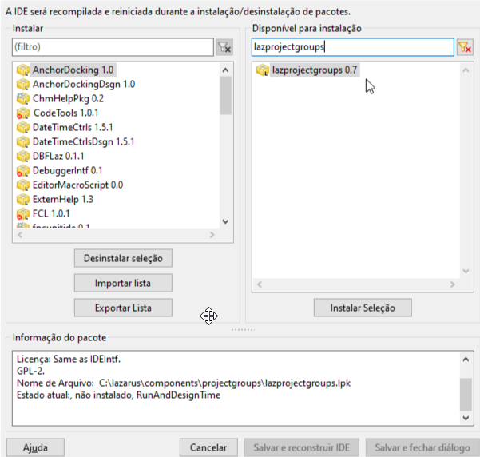

Gerenciador de projetos (Project Manager)
Por padrão, o Lazarus IDE abre apenas um projeto por vez, o que nem sempre é o ideal. Em alguns ambientes, é conveniente ter todos os projetos reunidos em um grupo para editar ou compilar o que for mais necessário de forma ágil. Por exemplo, você pode abrir todos os projetos de um grupo e compilá-los em um único movimento.
Se você deseja essa funcionalidade, vá em Package | Install/Uninstall Packages e instale o pacote “lazprojectgroups”:

Após adicionar o pacote, clique em “Salvar e reconstruir IDE”. Depois de reiniciar o Lazarus, você encontrará as opções no menu:
- Project | New project group: Para criar um novo grupo.
- Project | Open project group: Para abrir um grupo existente.
Você pode docar o gerenciador em um painel lateral para deixá-lo permanentemente visível em sua área de trabalho.
Para aprender o básico de sua utilização, leia o artigo: Usando grupo de projetos.
Vídeo Demonstrativo
Confira o funcionamento do gerenciador de projetos neste vídeo:
🎥 Aprenda a configurar uma conexão na prática:
Assistir: Produtividade com IDE Lazarus: Usando grupo de projetos